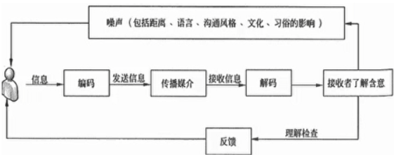
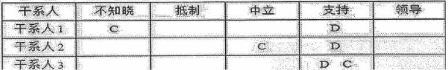

沟通管理
分值：3分
综合图谱

沟通模型
5个过程
- 编码：把想法转换成他人能理解的语言
- 信息和反馈信息：编码过程得到的结果
- 媒介：传递信息的方法
- 噪音：干扰信息传输和理解的因素
- 解码：把信息还原成有意义的想法

5个状态
- 已发送
- 已收到
- 已理解
- 已认可
- 已转化为积极的行为
沟通的渠道
- 正式渠道：传达文件、召开会议、上下级定期的情报交换
- 优点：沟通效果好，约束力强，保密
- 缺点：刻板，沟通速度慢
- 非正式渠道：私下交流、聚会、小道消息
- 优点：直接明了，速度快，形式多样
- 缺点：信息不明确，容易曲解，影像团队凝聚力
沟通渠道的计算公式
渠道总量**=n
- (n - 1) / 2****；n为干系人个数**
沟通管理计划内容
- 通用术语表
- 干系人的沟通需求
- **需要沟通的信息，**语言、格式、内容、详细程度等
- 发布信息的原因
- 发布信息和做出回应的时限和频率
- 负责沟通相关信息的人员
- 负责授权保密信息发布的人员
- 将要接收信息的个人或小组
- 传递信息的技术方法
- 为沟通分配的资源，时间和预算等
- 问题升级程序，用于规定下层员工上报问题的时限和路径
- 随项目进展，对沟通管理计划进行更新和优化的方法
- 项目信息流向图、工作流程、报告清单、会议计划等
- 沟通制约因素，例如法律法规、技术要求，组织政策等
- 关于项目状态会议、团队会议、网络会议和电子邮件等的指南和模板
- 对项目使用的网站和管理软件的使用说明
影响沟通方法选择的因素
不需要考虑资金因素
- 信息需求的紧迫性
- 技术的可用性
- 易用性
- 项目环境
- 信息的敏感性和保密性
沟通方法
- 交互式：两方或多方之间多向信息交换。最有效的方法，形式有
- 会议、电话、即时通信、视频会议
- 推式：把信息发送给接收方，能确定信息的发送，不能确保信息送达和被理解，形式有
- 信件、备忘录、传真、邮件、日志、新闻
- 拉式：用于信息量大和受众多，要求接收者自主自行方位信息内容，形式有
- 在线课程、经验教训数据库、知识库
报告绩效内容
收集和发布绩效信息，包括状态报告、进展测试结果、预测结果。
- 对过去绩效的分析
- 项目预测分析，时间和成本
- 风险和问题的当前状态
- 本报告期完成的工作
- 下个报告期需要完成的工作
- 本报告期被批准的变更汇总
- 需要审查和讨论的其他信息
干系人管理
综合图谱

干系人管理基本内容
- 项目干系人分析
- 沟通管理
- 问题管理
干系人登记手册的内容
- 基本信息
- 评估信息
- 干系人分类
干系人管理计划的内容
- 关键干系人的所需参与程度、当前参与程度
- 干系人变更的范围和影响
- 干系人之间的关系和潜在关系
- 项目现阶段的干系人沟通需求
- 需要分发给干系人的信息
- 分发相关信息的理由和影响
- 向干系人发信息的频率和时限
- 随项目进展，更新和优化干系人管理计划
管理干系人的过程活动
- 调动干系人适时参与项目，用于获得和确认他们对项目成功的持续承诺
- 协商和沟通管理干系人的期望、确保项目目标实现
- 处理尚未成为问题的干系人关注点，预测干系人未来可能提出的问题
- 识别和讨论关注点，评估项目风险
- 澄清和解决已识别出的问题
干系人分析（技术）
识别干系人的利益、期望和影响，并把他们与项目目标联系起来。在项目不同阶段应对干系人施加不同的影响
分析步骤
- 识别干系人及其相关信息
- 分析干系人可能的影响，病分类排序
- 评估干系人对不同情况可能的反应，制定相应策略对他们施加正面影响
干系人分类模型
- 权利/利益方格：干系人职权大小和对项目的关注程度

- 权力/影响方格：干系人职权大小和主动参与程度
- 影响/作用方格：干系人主动参与程度和改变项目计划/执行的能力
- 凸显模型：干系人权利、紧迫程度和合法性
干系人参与程度分类
- 不知晓
- 抵制
- 中立
- 支持
- 领导
干系人参与评估矩阵
- C：现在的分类
- D：将要改变的状态
